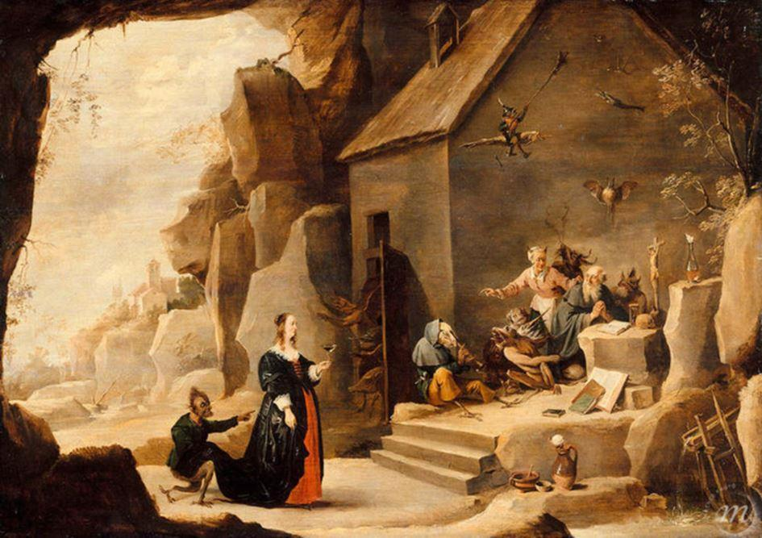
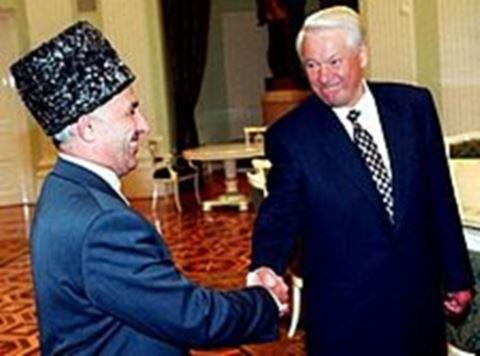
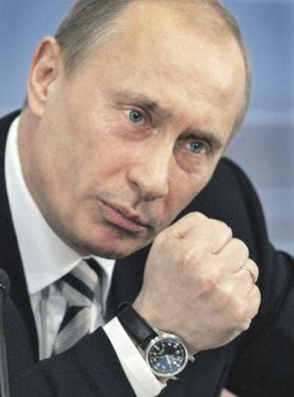
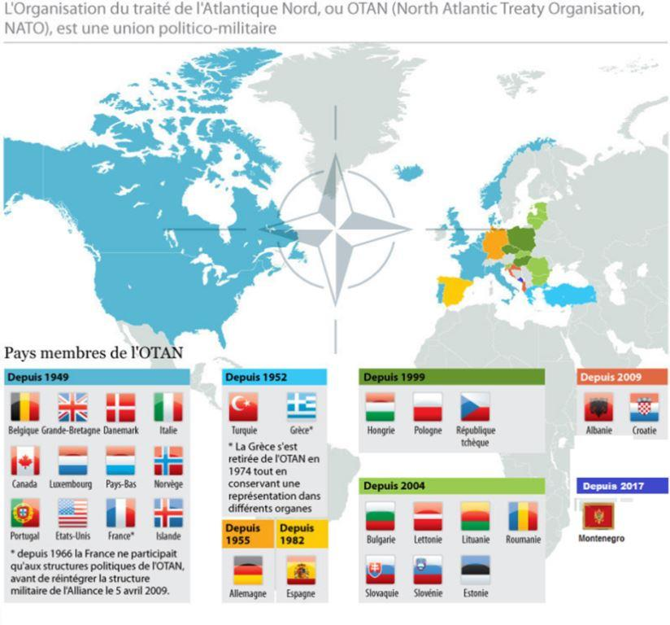

Jamais autant qu’aujourd’hui la Russie n’a été si proche d’une démocratie. Cette phrase iconoclaste et provocatrice fera, j’en suis certain, grincer quelques dentiers. Elle mérite cependant que l’on s’y intéresse d’un peu plus prêt.
En y réfléchissant un peu, la Russie, depuis le début de son histoire, en passant par Pierre le Grand, la révolution de 1917, le stalinisme, la guerre froide et la chute de l’URSS, n’a jamais connu de régime démocratique. Après la chute de l’empire soviétique et son démantèlement, la période post Gorbatchev a porté au pouvoir en 1991 un oligarque Boris Nikolaïevitch Eltsine, beaucoup poivrot et un peu clown, aimé par les occidentaux, sous le règne duquel la Russie humiliée portait à la satisfaction de certains tous les maux d’un pays soumis et vaincu. Une Russie faible ne pouvait, en effet, que rassurer quelques faucons surtout américains confortés dans leurs sentiments anti russes et anti européens, préférant humilier ce grand peuple, en se confortant dans la certitude de notre supposée supériorité. La crise financière et les erreurs géostratégiques nous ont par la suite contraints à plus de modestie.
Eltsine faisait rire Clinton, mais son règne ne fut que pitoyable. En 1992, Eltsine hérite d’une situation catastrophique, (1) l'industrie et l'agriculture sont en lambeaux, l'armée est en totale déliquescence, l'administration et la police sont corrompues, l’inflation est à son plus haut niveau, la misère est devenue endémique. En 1994 débute la première guerre de Tchétchénie, Moscou doit faire face à l’indépendantisme des « insoumis chroniques » que sont les Tchétchènes. La Russie n’a ni les moyens ni la volonté de résoudre cette crise et les accords de paix de Khassaviourt ne résolvent pas les problèmes, notamment celui du terrorisme, ce qui débouchera sur la seconde guerre de Tchétchénie en 1999 qui durera en fait 10 ans.
Il faut se souvenir que Boris Eltsine avait autorisé l’élection présidentielle en Tchétchénie avec la participation comme candidats des anciens combattants, y compris les criminels de guerre. Aslan Maskhadov y est alors élu avec 54 % des voix. En 1998, la situation économique est telle que la dette de la Russie sur les marchés internationaux ne peut plus être remboursée. Le pays est en faillite, cela entraîne la chute en série des banques russes.
L’homo ex-sovieticus rejoint la cohorte des nouveaux pauvres de la planète, dans les marchés les babuskhas vendent des radis noirs pour survivre alors que les oligarques roulent en Mercédès 4x4 escortés par des milices mafieuses en armes. Le pays est proche du chaos.
Les privatisations qui sont menées par Eltsine font que des entreprises d’Etat sont revendues pour une bouchée de pain à des ex communistes pour la plupart proches du pouvoir qui en profitent pour les revendre à des groupes étrangers afin de réaliser des opérations plus que juteuses. Les mafias imposent leur loi avec la complicité des administrations corrompues couvertes par les institutions d’État et la police.
Le dernier mandat de Eltsine sent la fin de règne, en 1996 la situation s’aggrave, la classe moyenne a été anéantie, le problème tchétchène n'est pas résolu, la Russie ainsi que les États de la fédération sont exsangues. La tentation est grande pour certains pays de la frange d’Asie de conquérir une autonomie favorisée en sous-mains (sous couvert de droit de l’homme) par quelques services occidentaux plus ou moins occultes. Eltsine change plusieurs fois de Premier ministre, se succèdent alors, Viktor Tchernomyrdine, Sergueï Kirienko, Ievgueni Primakov, Sergueï Stepachine et un lieutenant-colonel du KGB (1) (qui commence sa carrière politique à la mairie de Saint-Pétersbourg), conseiller proche du président Boris Eltsine, au point qu’il fera de lui le directeur du FSB (sécurité publique) en 1998. Vladimir Poutine devient président de plein exercice le 7 mai 2000 après avoir remporté l'élection présidentielle dès le premier tour. Fraudes ou pas, Poutine est aux commandes de l’Etat ou de ce qui en reste. Depuis 2000, après avoir modifié la constitution, le pouvoir est partagé alternativement par le duo Dimitri Medvedev - Vladimir Vladimirovitch Poutine.
Les premières déclarations de Poutine sont remarquées, ainsi, il déclarera en 1998, lors d'une conférence de presse dans la nouvelle capitale Astana du Kazakhstan, qu'il faudra « buter les terroristes jusque dans les chiottes ».
La reprise en main du pays par l'administration de Poutine est radicale. Des oligarques sont jetés en prison, la police est reprise en main, les services de renseignements sont renforcés, l’église orthodoxe est considérée comme un allié de poids, les siloviki agissent et démantèlent les organisations susceptibles de gêner la reprise en main. Les siloviki se voient avant tout comme des patriotes soucieux du redressement et du développement de leur pays, par opposition aux oligarques supposés être soutenus par l'Occident. Macha Lipman, analyste à la Fondation Carnegie pour la Paix Internationale indique cependant que le parrainage par Vladimir Poutine de Dmitri Medvedev, juriste de réputation libérale et non issu du milieu des siloviki, au poste de chef de l'État, laisse supposer que ce système politique conserve un certain degré d'ouverture.
Les résultats de cette politique ferme de reprise en main de l’État portent assez rapidement leurs fruits, la croissance est de retour, la confiance renaît, l’économie redémarre, la misère recule, et d’ailleurs, un certain nombre de dirigeants occidentaux apprécient le fait que Vladimir Poutine ait favorisé une économie nouvelle qui renoue avec la croissance et qui est plutôt bénéfique aux échanges commerciaux et propices aux grands contrats.
La réforme fiscale voit la mise en place d'un taux unique de 13 % pour l'impôt sur les revenus, l’introduction d'une taxe sociale unifiée, une baisse du taux de la TVA, la réduction du taux des impôts sur les sociétés de 35 % à 24 %, ce qui permet de simplifier la fiscalité et de limiter la fraude et la corruption. La remonétisation des transactions met une fin à la pratique du troc, le paiement des salaires et des retraites s’effectuent en temps et en heure, la mise en place de codes et règles diverses s’inspire des pratiques occidentales, la répression des pratiques de corruption au sein de l'État s’intensifie. Cette politique se voit renforcé par la hausse du cours du pétrole et du gaz. La dette publique passe de 120% en 1998 à 13 % en 2007. La population voit son niveau de vie croître. Poutine est un dirigeant populaire et on lui pardonne d’autant plus ses excès qu’il a les moyens de faire taire toute opposition qui deviendrait trop menaçante pour sa stratégie.
La lutte menée par un État plus fort, contre les mafias paraétatiques et les fraudes fiscales des oligarques industriels et financiers portent ses fruits. C’est, selon Poutine, l’instauration de la « dictature de la loi » et cela plait au plus grand monde. Dans les sondages Poutine est considéré comme l’homme providentiel par une immense majorité de la population. Cela commence à inquiéter une frange active des adeptes d’une Amérique régnant sur le monde et qui ne souhaite pas le retour d’une Russie forte sur le plan international. Le discours de Munich de 2007 prononcé par Poutine marque une étape dans la volonté de tourner la page d’une Russie faible face à ce qui est considéré par le kremlin comme le diktat des États Unis sur le monde.
« Les actes illégitimes et unilatéraux n'ont résolu aucun problème. De plus, ils ont provoqué de nouvelles tragédies humaines et de nouveaux foyers de tension. (...) Un État, (...) les États-Unis, a débordé de ses frontières de toutes les manières. Cela est visible dans les projets économiques, politiques, culturels et éducatifs qu'ils imposent à d'autres nations. À nous la Russie, on nous fait toujours la leçon sur la démocratie. « L’expansion de l'Otan (...) représente une provocation grave qui diminue le niveau de confiance mutuelle. » Tout est dit dès 2007, mais en Europe personne ne prend au sérieux ces déclarations, notamment la France qui s’est opposée en 2003 à la guerre en Irak avec, on l’a oublié, la Russie et l’Allemagne.
« À mesure qu'elle redressait l'échine, forte de sa croissance soutenue et de ses pétrodollars (le fonds de stabilisation alimenté avec les revenus pétroliers, créé en 2004, vient de dépasser les 100 milliards de dollars) la Russie a repris pied sur la scène internationale « pour défendre ses intérêts », comme le répète Poutine, tout en assurant, à l'intérieur, le contrôle de ses industries stratégiques, au besoin en fermant des portes aux majors pétrolières américaines. Sur le Proche-Orient, l'Irak, l'Iran, les marches européennes et asiatiques de l'ancien empire soviétique, le Kremlin a affiché ses divergences avec Washington. » (analyse de Fabrice Nodé-Langlois Correspondant du Figaro à Moscou du 24/02/2007). Cet état de fait inquiète-t-il les USA au point d’orienter leur politique vers une déstabilisation de l’Ukraine ? La question mérite pour le moins d’être posée, et notamment les conditions dans lesquelles a commencé l’affrontement entre les pro-russes et les pro-européens. Qui en sous-main avait avantage à tirer les ficelles en espérant remporter la mise ? On observe, d’un côté ceux qui ont la volonté de faire en sorte que l’Ukraine s’américanise et s’otanise, de l’autre, ceux qui estiment que l’Ukraine fait partie de la zone d’influence russe et font en sorte qu’elle implose afin que l’Ukraine ne puisse en aucun cas adhérer à l’Otan. Après les accords de Minsk2, l'Ukraine a reçu la semaine dernière, 5 milliards de dollars, la première tranche du prêt de 1705 milliards de dollars que lui a accordé le Fonds monétaire international (FMI). Selon l’AFP, le directeur adjoint russe et son collègue brésilien se sont abstenus.
Parallèlement, le combat mené par les américains et les occidentaux s’est déplacé sur celui du respect des droits de l’homme, ce qui fait partie d’une stratégie habituelle de déstabilisation lorsque l’on veut indiquer à l’opinion un changement de politique. Poutine, après avoir été l’ami de l’Amérique, en devient le diable jusqu’à être considéré récemment comme un malade.
Ce sont les conclusions « sérieuses » d'experts militaires du Pentagone : Vladimir Poutine serait atteint par le syndrome d'Asperger. Cette forme d'autisme l'obligerait à exercer un « contrôle maximum » de lui-même, notamment lorsqu'il traverse une crise précise, selon le rapport du ministère américain de la Défense, publié en 2008 et dévoilé cette semaine opportunément par le quotidien américain USA Today. Ce travail serait le fruit d'un think-tank interne au Pentagone, l'Office of Net Assessment. Force est de constater que la propagande est équitablement partagée. Lorsque les arguments manquent, on ressort les vieilles méthodes d’agit-prop, celle du dénigrement assez nauséeux de l’adversaire. À contrario, personne ne sait si Bush avait été sujet à des troubles similaires.
Poutine n’est pas exempt de reproches, loin de là. En jouant avec les peurs, en radicalisant son discours, en s’appuyant sur l’église orthodoxe, très nationaliste, afin de maintenir le peuple dans un carcan. L’Église comme le nationalisme, sont les meilleurs alliés du pouvoir lorsque le système politique sait s’en servir à la fois comme directeur de conscience du peuple et élément de cohésion face à tout ce qui n’est pas autochtone. Le vieux démon du culte de la personnalité, dérive de tous les dirigeants russes depuis 1917, est cependant une tendance de son histoire. (Paternalisme et culte de la personnalité sont deux piliers immuables des dirigeants russes). Le bon peuple a besoin d’un chef, Poutine en est un. Cela bien entendu, suffit pour alimenter la contre propagande occidentale. Poutine serait-il donc un proche cousin d’Hitler dans sa velléité d’expansionnisme territorial ? Le discours de certains « droit-de-l’hommistes » n’est pas loin de la caricature. Je pencherais plutôt vers une réflexion plus mitigée. Poutine est-il tombé dans le piège de la tentation de Saint Antoine ? Ce saint, retiré dans le désert d'Égypte, subit la tentation du Diable sous la forme de visions des voluptés terrestres. Fait-il entrevoir trop de volupté à son peuple, au point de l’emmener vers un avenir incertain ? Attention à ne pas faire en sorte de trop le diaboliser, comme Jacques Attali le pense et je suis en accord avec lui … « Si on continue comme ça, si on continue à isoler la Russie, elle va devenir un adversaire, elle va basculer de Weimar à Hitler, je ne pense pas que ce soit Poutine, je pense que c’est après lui qu’on a le danger ».
La tentation de Saint Antoine nous concerne tout autant.
(1) La Lituanie est la première RSS à déclarer son indépendance le 11 mars 1991. L’Estonie et la Lettonie font de même le 20 et le 21 août respectivement lors du putsch de Moscou. Dans le Caucase, la Géorgie est la première à déclarer son indépendance le 9 avril 1991, suivi de l’Azerbaïdjan le 30 août 1991 et l’Arménie le 23 septembre 1991. A tour de rôle, les entités fédérées de l’Union soviétique déclarent leur indépendance : l’Ukraine le 24 août 1991, la Biélorussie le 25 août, la Moldavie le 27 août, l’Ouzbékistan et le Kirghizistan le 31 août, le Tadjikistan le 9 septembre, le Turkménistan le 27 octobre et finalement le Kazakhstan le 16 décembre. La sécession effective de l’Ukraine (1er décembre 1991) et son refus de signer le traité d’Union signent l’arrêt de mort de l’Union soviétique.
(2) Lors de ses études supérieures à Moscou, il porte le nom de code « Platov » et exerce les fonctions de chef bénévole de son unité d’élèves-officiers. En 1985, il est envoyé pour la seule et unique fois à l'étranger, en RDA. Il passe cinq ans dans une petite unité opérationnelle déconcentrée à Dresde où, sous la couverture parfaitement transparente de directeur de la « Maison de l’amitié germano-soviétique », il œuvre pour le KGB. C’est là qu’il est repéré pour la première fois à ma connaissance par les services de renseignement français.
Partager cette page